Каменеріз ShellChain
Кварц
Можна переробити назад у кристали на каменерізі.

Аметист
Можна переробити назад у кристали на каменерізі.

Для блока бамбука
Для обтесаного вигляду все точно так же
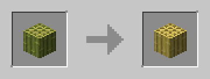
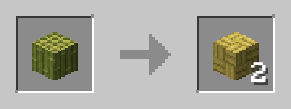
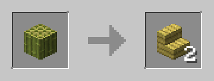
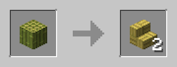
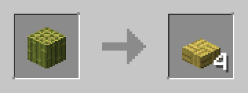
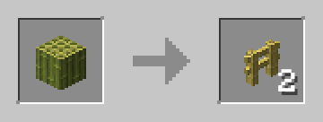
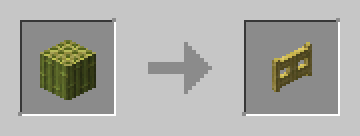
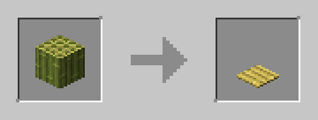
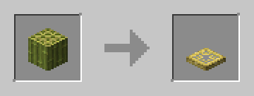
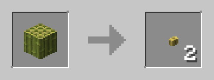
Для дощок бамбука
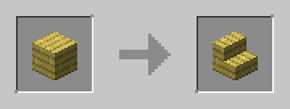
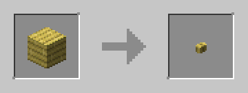
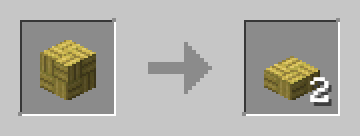
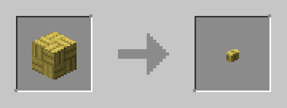
Для деревини
Для обтесаних, кори та обтесаної кори всі крафти однакові за винятком деяких
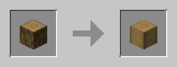
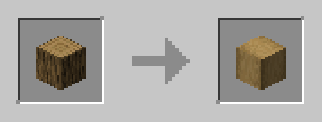
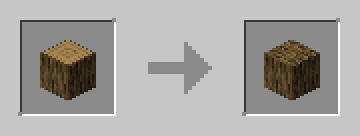
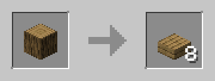
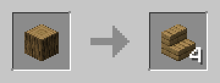
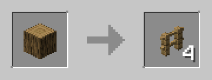
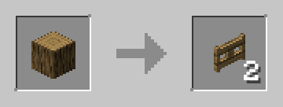
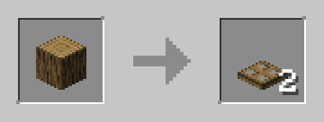
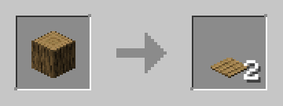
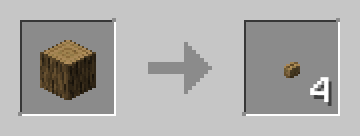
Для дощок
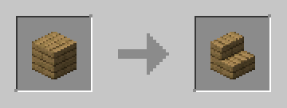
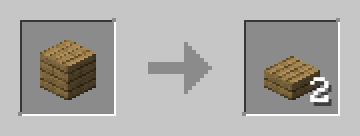
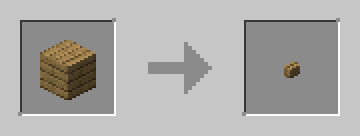